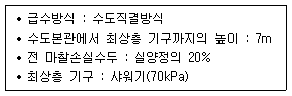
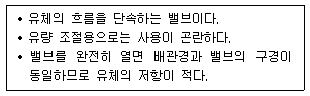
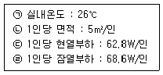
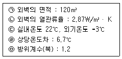
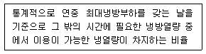
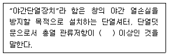
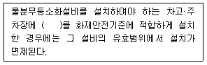
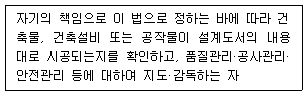

건축설비산업기사 (2016-10-01 기출문제)
1과목: 건축일반
1. 학교의 운영 방식에 관한 설명으로 옳지 않은 것은?
- 플래툰(P)형은 미국의 초등학교에서 과밀을 해소하기 위해 실시한 것이다.
- 교과교실(V)형은 학생 이동률이 심한 것이 단점이다.
- 종합교실(U)형은 초등학교 저학년보다는 고학년에 적합하다.
- 달톤(D)형은 우리나라에서는 입시 학원이나 사설 외국어 학원에서 사용하고 있다.
(정답률: 86%)

2. 아파트 배치계획에서의 인동간격과 가장 거리가 먼 요소는?
- 일조
- 통풍
- 방화
- 단위세대의 면적
(정답률: 87%)
3. 목구조의 가새 설치에 관한 설명으로 옳지 않은 것은?
- 가새의 설치 각도는 45°에 가까울수록 유리하다.
- 좌우 대칭으로 배치하는 것이 좋다.
- 중요건물은 X자 형의 가새로 한다.
- 기둥에 휨모멘트가 발생하는 곳에 설치하는 것이 좋다.
(정답률: 71%)
4. 초등학교 대지에 관한 설명 중 옳지 않은 것은?
- 통학에 편리하고 안전한 환경이어야 한다.
- 상업 지역의 중심부에 위치한 곳이 좋다.
- 일조가 양호하고 배수가 잘 되는 곳이 좋다.
- 평탄한 곳이 좋고 남쪽으로 약간 경사져도 지장이 없다.
(정답률: 90%)
5. 도서관 계획에 관한 설명 중 옳지 않은 것은?
- 서고 증축을 반드시 고려하여 계획한다.
- 서고는 화재에 대비하여 스프링클러를 설치한다.
- 이용자측과 직원, 자료의 출입구를 가능한 별도로 계획하는 것이 바람직하다.
- 폐가식은 도서관리의 유지가 편리하다.
(정답률: 92%)
6. 도서관의 각 실 중 특수한 공기조화 설비가 필요한 공간은?
- 서고
- 복사실
- 참고열람실
- 목록실
(정답률: 85%)
7. 상점에 있어 직접적으로 판매활동에 사용되지 않는 공간은?
- 상품관리공간
- 도입공간
- 통로공간
- 서비스공간
(정답률: 75%)
8. 철골부재의 용접접합 시 부재의 용접부위에 대해 개선 가공을 하는 이유는?
- 접합 단면을 쉽게 밀착시키기 위하여
- 단면가공을 쉽게 하기 위하여
- 완전용입을 쉽게 하여 접합 강도를 높이기 위하여
- 이물질 제거를 쉽게 하기 위하여
(정답률: 76%)
9. 진열창(show window)의 조명에 관한 설명으로 옳지 않은 것은?
- 전반조명은 시계점, 귀금속점 등에 주로 사용된다.
- 국부조명은 강조할 필요가 있는 고가의 상품에 사용된다.
- 전반조명으로는 형광등, 할로겐등이 적합하다.
- 간접조명은 광선이 부드럽고 그림자가 거의 생기지 않는다.
(정답률: 89%)
10. 사무소 건축의 화장실 배치에 관한 설명으로 옳지 않은 것은?
- 각 사무실로부터 동선이 간단할 것
- 각 층마다 공통의 위치에 있을 것
- 가능하면 외기에 접하는 위치로 할 것
- 각 층에서 3개소 이상 여러 곳에 분산 배치할 것
(정답률: 93%)
11. 목조 왕대공 지붕틀 구조에서 왕대공과 마룻대의 맞춤으로 가장 적합한 것은?
- 안장 맞춤 볼트 조임
- 가름장 장부 맞춤
- 맞댄 덧판 이음 볼트 조임
- 턱걸이 주먹장 이음
(정답률: 51%)
12. 벽돌벽체의 기초쌓기에 관한 설명으로 옳지 않은 것은?
- 벽돌조의 기초는 독립기초로 한다.
- 기초를 넓히는 경사는 60°이상으로 한다.
- 기초에 쓰이는 벽돌은 모양보다 강도가 큰 것이 좋다
- 기초판 너비는 벽돌면 보다 100~150mm정도 크게 한다.
(정답률: 71%)
13. 조적구조에 대한 설명으로 옳지 않은 것은?
- 조적조에 있어서 통줄눈을 피하는 이유는 응력을 분산시키기 위해서이다.
- 보강콘크리트블록조 벽은 테두리보를 설치하여 내력벽과 일체화시킴으로써 건축물의 강도를 높인다.
- 영식쌓기는 한 켜는 길이쌓기, 다음 켜는 마구리쌓기를 번갈아 쌓고 끝부분에 한 켜 걸러 칠오토막을 넣는다.
- 벽돌벽의 공간쌓기의 목적은 방습이나, 열의 차단 효과를 얻는데 있다.
(정답률: 80%)
14. 구조의 분류와 그 예가 서로 관련 없는 것끼리 짝지어진 것은?
- 가구식 구조 – 목 구조
- 조적식 구조 – 블록 구조
- 현수식 구조 – 공기막 구조
- 일체식 구조 – 철근콘크리트 구조
(정답률: 85%)
15. 주근의 위치고정과 보의 전단보강을 위해 주철근에 직각으로 둘러 감은 철근의 종류는?
- 늑근(Stirrup)
- 대근(Hoop)
- 벤트근
- 온도조절철근
(정답률: 83%)
16. 사무소 건축에서 기둥간격을 결정하는데 있어 가장 거리가 먼 요소는?
- 지하주차장 주차간격
- 렌터블비
- 채광상 층고에 의한 안깊이
- 책상배치간격
(정답률: 58%)
17. 목조의 벽체구성과 관계가 없는 부재는?
- 토대
- 통재기둥
- 층도리
- 동자기둥
(정답률: 53%)
18. 예로는 산장호텔, 온천호텔 등이 있으며 피서, 휴양, 관광 등의 목적을 가진 휴양객을 위한 호텔은?
- 터미널 호텔
- 아파트먼트 호텔
- 커머셜 호텔
- 리조트 호텔
(정답률: 92%)
19. 주택설계의 기본방향과 가장 거리가 먼 것은?
- 주부 동선의 확장
- 가족 본위의 주택
- 가사노동의 경감
- 생활의 쾌적함 증대
(정답률: 89%)
20. 초등학교 건축계획에 관한 설명으로 옳지 않은 것은?
- 각 학년 단위로 교실을 배치한다.
- 초등학교 1학년은 조망을 고려하여 2층 이상에 배치한다.
- 교사의 배치방법 중 분산병렬형은 일종의 핑거 플랜으로 일조, 통풍 등 교실의 환경조건이 균등하다.
- 관리부분의 배치는 전체의 중심이 좋지만 학생의 동선을 끊는 배치는 선택하지 않아야 한다.
(정답률: 91%)
2과목: 위생설비
21. 중앙식 급탕방식에 관한 설명으로 옳지 않은 것은?
- 배관으로부터의 열손실이 적다.
- 시공 후 기구 증설에 따른 배관변경공사를 하기 어렵다.
- 기계실 등에 다른 설비와 함께 가열장치 등이 설치되므로 관리가 용이하다.
- 일반적으로 열원장치는 공조설비와 겸용하여 설치되기 때문에 열원단가가 싸다
(정답률: 72%)
22. 다음 중 건물 내 가스배관의 배관재료로 가장 많이 사용되는 것은?
- 강관
- 동관
- 주철관
- 콘크리트관
(정답률: 75%)
23. 다음 중 펌프의 실양정을 바르게 나타낸 것은?
- 흡입실양정+전양정
- 흡입실양정+손실수두
- 토출실양정+손실수두
- 흡입실양정+토출실양정
(정답률: 71%)
24. 내경이 25mm인 매끈한 관을 통하여 물을 1.5m/s의 속도로 보내는 경우, 마찰손실압력은? (단, 관마찰계수 0.03, 관의 길이 40m인 경우)
- 5.4kPa
- 54kPa
- 540kPa
- 5.4MPa
(정답률: 54%)
25. 옥내소화전설비에서 펌프의 토출측 주배관의 구경은 유속이 최대 얼마 이하가 될 수 있는 크기 이상으로 하여야 하는가?
- 2m/s
- 3m/s
- 4m/s
- 5m/s
(정답률: 68%)
26. 대변기의 세정방식 중 세정밸브식에 관한 설명으로 옳지 않은 것은?
- 소음이 큰 편이다.
- 수압의 제한이 있다.
- 연속사용이 가능하다.
- 급수관경이 최소 20mm 이상 필요하다.
(정답률: 73%)
27. 급탕설비에서 순환펌프의 순환수량 결정 방법으로 가장 알맞은 것은?
- 사용 수량과 같게 한다.
- 급수부하 단위의 3/4으로 한다.
- 급탕량의 15~25%의 범위에서 산출한다.
- 배관 및 기기로부터의 열손실량으로 산출한다.
(정답률: 62%)
28. 통기관의 설치에 관한 설명으로 옳지 않은 것은?
- 바닥 아래의 통기관은 금해야 한다.
- 오물정화조의 통기관은 일반통기관과 연결해서는 안 된다.
- 간접배수 계통의 통기관은 일반 가정 오수 계통의 통기관에 연결한다.
- 오수 피트 및 잡배수 피트 통기관은 양자 모두 개별 통기관을 갖도록 한다.
(정답률: 73%)
29. 급수방식 중 펌프직송방식에 관한 설명으로 옳지 않은 것은?
- 자동제어에 드는 설비 비용이 많다.
- 하향급수 배관방식이 주로 이용된다.
- 전력 차단시에는 급수가 불가능 하다.
- 작동방식에는 정속방식과 변속방식이 있다.
(정답률: 85%)
30. 강관의 이음쇠 중 동일한 관경의 관을 직선 연결할 때 사용되는 것은?
- 티
- 니플
- 엘보
- 플러그
(정답률: 85%)
31. 최대 방수구역에 설치된 스프링클러헤드의 개수가 30개인 경우, 스프링클러설비의 수원의 저수량은 최소 얼마 이상으로 하여야 하는가? (단, 개방형 스프링클러헤드를 사용하는 스프링클러설비의 경우)
- 24m3
- 32m3
- 48m3
- 54m3
(정답률: 72%)
32. 오수 중의 분해 가능한 유기물이 용존 산소의 존재하에 미생물의 작용에 의해 산화분해되어 안정한 물질로 변해갈 때 소비하는 산소량을 무엇이라 하는가?
- PPM
- COD
- BOD
- SS
(정답률: 84%)
33. 배수·통기 배관의 검사 및 시험방법 중 위생기구 등의 설치가 완료된 후에 실시하는 것으로 시험을 하고 있는 사람의 후각을 마비시킬 우려가 있기 때문에 누설에 대한 판단이나 누설부분의 발견이 어렵다는 단점이 있는 것은?
- 만수시험
- 박하시험
- 연기시험
- 기압시험
(정답률: 75%)
34. 다음 중 통기효과 측면에서 가장 이상적인 통기방식은?
- 습윤통기
- 회로통기
- 도피통기
- 각개통기
(정답률: 85%)
35. 배관 내에 흐르고 있는 유체에 발생하는 마찰 저항에 관한 설명으로 옳은 것은?
- 유량이 증가하면 마찰저항은 감소한다.
- 관의 길이가 증가하면 마찰저항은 증가한다.
- 관의 직경이 증가하면 마찰저항은 증가한다.
- 관내를 흐르는 유체의 평균유속이 증가하면 마찰저항은 감소한다.
(정답률: 69%)
36. 다음과 같은 조건에서 요구되는 수도 본관의 최저 압력은?

- 0.084MPa
- 0.154MPa
- 0.84MPa
- 1.54MPa
(정답률: 51%)
37. 배수수직관과 통기수직관을 연결하는 통기관은?
- 신정통기관
- 반송통기관
- 공용통기관
- 결합통기관
(정답률: 75%)
38. 급탕배관의 신축·팽창량을 흡수 처리하기 위해 사용되는 신축이음쇠의 종류에 속하지 않은 것은?
- 스위블 조인트
- 루프형 이음쇠
- 슬리브형 이음쇠
- 메카니컬 조인트
(정답률: 82%)
39. 유체를 일정한 방향으로만 흐르게 하고 반대 방향으로는 흐르지 못하게 하는 밸브는?
- 슬루스 밸브
- 글로브 밸브
- 체크 밸브
- 스톱 밸브
(정답률: 84%)
40. 지하 저수조의 물의 양수능력 200L/min의 펌프로 양정 10m인 고가수조에 양수하고자 할 때 펌프의 축동력은? (단, 펌프의 효율은 80%이다.)
- 0.23kW
- 0.33kW
- 0.38kW
- 0.41kW
(정답률: 50%)
3과목: 공기조화설비
41. 다음 중 엔탈피가 0kJ/kg인 공기는?
- 건구온도 0℃인 건공기
- 건구온도 0℃인 습공기
- 노점온도 0℃인 습공기
- 건구온도 0℃인 포화공기
(정답률: 59%)
42. 주방, 공장, 실험실에서와 같이 실의 일부 구역에서 발생하는 오염물질의 확산 및 방산을 극소화시키려고 할때 적용하는 환기방식은?
- 희석환기
- 전체환기
- 중력환기
- 국소환기
(정답률: 72%)
43. 습공기에 관한 설명으로 옳지 않은 것은?
- 습공기를 가열하면 엔탈피가 증가한다.
- 습공기를 냉각하면 비체적은 감소한다.
- 습공기를 가열하면 상대습도는 감소한다.
- 습공기를 냉각하면 절대습도는 증가한다.
(정답률: 67%)
44. 펌프 1개를 운전하는 경우와 비교한 펌프 2개를 병렬로 연결하여 운전하는 경우에 관한 설명으로 옳은 것은? (단, 배관의 마철저항은 없으며, 펌프는 동일한 특성을 갖는다.)
- 유량과 양정 모두 2배가 된다.
- 유량은 변하지 않고 양정이 2배가 된다.
- 양정은 변하지 않고 유량이 2배가 된다.
- 유량과 양정은 모두 변하지 않고 동일하다.
(정답률: 62%)
45. 다음과 같은 특징을 갖는 밸브는?

- 게이트 밸브
- 글로브 밸브
- 체크 밸브
- 앵글 밸브
(정답률: 59%)
46. 흡수식 냉동기의 응축기에서 냉각탑으로 흐르는 유체는?
- 열매
- 냉매
- 냉수
- 냉각수
(정답률: 82%)
47. 열팽창에 의한 배관계통의 자유로운 움직임을 구속하거나 제한하기 위한 장치는?
- 써포트
- 브레이스
- 파이프 슈
- 레스트레인트
(정답률: 70%)
48. 다음의 전공기 공조방식 중 가장 에너지 절약적인 방식은?
- 2중덕트 정풍량방식
- 2중덕트 변풍량방식
- 단일덕트 정풍량방식
- 단일덕트 변풍량방식
(정답률: 60%)
49. 공기조화시 조절대상이 되는 공기조화의 4요소에 속하지 않은 것은?
- 습도
- 기류
- 복사열
- 청정도
(정답률: 72%)
50. 20×30m인 사무소 공간에서 인체로부터 발생되는 전열량은?

- 14884W
- 15768W
- 17127W
- 17441W
(정답률: 47%)
51. 등압법으로 설계할 경우 단일 덕트 내에서 많은 풍량이 송풍되면 여러 가지 문제점이 유발될 수 있어 일정풍량 이상이면 등속법으로 설계하는데 그 이유로 가장 알맞은 것은?
- 소음이 커진다.
- 마찰저항이 커진다.
- 덕트길이가 길어진다.
- 부유분진의 비상이 많아진다.
(정답률: 68%)
52. 송풍기의 일정한 회전수에서 횡축을 풍량 Q[m3/min], 종축을 압력[Pa], 효율[%], 소요동력[W]으로 놓고 풍량에 따라 이들의 변화과정을 나타낸 것은?
- 변화곡선
- 고유곡선
- 풍량곡선
- 특성곡선
(정답률: 58%)
53. 크린룸, 바이오크린룸의 공기여과에 사용되며 세균이 나 SO2, NO2의 제거에도 효과가 좋고 0.3㎛ 입자의 제진 효율이 99.9% 이상의 성능을 가진 필터는?
- 석면 필터
- 활석 필터
- HEPA 필터
- 활성탄 필터
(정답률: 83%)
54. 공기조화배관의 배관회로방식에 관한 설명으로 옳지 않은 것은?
- 개방회로방식에서는 펌프의 양정에 실양정이 포함된다.
- 개방회로방식은 개방식 냉각탑의 냉각수배관 등에 응용된다.
- 개방회로방식에는 물의 팽창을 위한 팽창탱크를 반드시 갖추어야 한다.
- 밀폐회로방식에서는 순환수가 공기와 접촉하지 않으므로 물처리비가 적게 든다.
(정답률: 74%)
55. 압축기, 응축기, 냉각기, 송풍기, 공기여과기 등으로 구성되는 공기냉각 장치를 하나의 케이싱 속에 내장시킨 장치는?
- 터미널유닛
- 팬코일유닛
- 중앙식 공조기
- 패키지형 공조기
(정답률: 68%)
56. 벽체의 크기가 4m×5m, 두께가 200mm인 콘크리트벽의 실내측 표면온도가 20℃, 실외측 표면온도가 10℃일 때 실내 공기와 실내측 표면 사이의 전달열량은? (단, 실내온도는 22℃, 실외온도 5℃, 내표면 열전달율 αi=8W/m2·K, 외표면 열전달율 α0=20W/m2·K이다.)
- 320W
- 640W
- 1600W
- 3200W
(정답률: 30%)
57. 다음의 냉동기 중 운전시 진동이나 소음이 가장 적은 것은?
- 흡수식 냉동기
- 터보식 냉동기
- 스크류식 냉동기
- 왕복동식 냉동기
(정답률: 83%)
58. 각종 보일러에 관한 설명으로 옳은 것은?
- 주철제 보일러는 반입이 쉽고 내식성이 강하여 수명이 길다.
- 수관보일러는 사용압력이 연관식보다 낮아, 부하변동에 대한 추종성이 낮다.
- 관류보일러는 보유수량이 많으므로 가열시간이 길어, 부하변동에 대한 추종성이 나쁘다.
- 연관보일러는 부하변동에 적응하기 어렵고 보유수면이 적어서 급수용량제어가 어렵다.
(정답률: 56%)
59. 공조기 출구와 덕트 접속시 주의할 사항으로 옳지 않은 것은?
- 엘보에 사용되는 베인은 2중 베인으로 한다.
- 주덕트로 연결되는 곳은 캔버스 이음으로 한다.
- 직관부의 길이는 송풍기 출구에서의 장변치수의 5배로 한다.
- 주덕트와 연결에 사용되는 이음새의 경사는 1/7 이하로 한다.
(정답률: 54%)
60. 다음과 같은 조건에 있는 어느 건물의 외벽이 북측에 접할 때 난방시 이 벽체를 통한 관류부하는?

- 2307W
- 2769W
- 8610W
- 10332W
(정답률: 36%)
4과목: 건축설비관계법규
61. 다음 중 허가 대상에 속하는 용도변경은?
- 전기통신시설군 → 영업시설군으로 변경
- 근린생활시설군 → 그 밖의 시설군으로 변경
- 교육 및 복지시설군 → 근린생활시설군으로 변경
- 주거업무시설군 → 문화 및 집회시설군으로 변경
(정답률: 59%)
62. 음의 소방시설 중 소화활동설비에 속하지 않는 것은?
- 제연설비
- 비상방송설비
- 연결송수관설비
- 비상콘센트설비
(정답률: 75%)
63. 건축물의 에너지절약 설계기준에 따른 용어의 정의가 옳지 않은 것은?
- 거실의 외벽이라 함은 거실의 벽 중 외기에 직접 또는 간접 면하는 부위를 말한다.
- 외피라 함은 거실 또는 거실 외 공간을 둘러싸고 있는 벽·지붕·바닥·창 및 문 등으로서 외기에 직접 또는 간접 면하는 부위를 말한다.
- 방풍구조라 함은 출입구에서 실내외 공기 교환에 의한 열출입을 방지할 목적으로 설치하는 방풍실 또는 회전문 등을 설치한 방식을 말한다.
- 투광부라 함은 창, 문면적의 50% 이상이 투과체로 구성된 문, 유리블럭, 플라스틱패널 등과 같이 투과재료로 구성되며, 외기에 접하여 채광이 가능한 부위를 말한다.
(정답률: 67%)
64. 건축물의 냉방설비에 대한 설치 및 설계기준상 다음과 같이 정의되는 용어는?

- 축열률
- 냉방률
- 수용률
- 이용률
(정답률: 74%)
65. 다음 중 비상경보설비를 설치하여야 하는 특정 소방대상물 기준으로 옳은 것은?
- 15명 이상의 근로자가 작업하는 옥내작업장
- 30명 이상의 근로자가 작업하는 옥내작업장
- 40명 이상의 근로자가 작업하는 옥내작업장
- 50명 이상의 근로자가 작업하는 옥내작업장
(정답률: 65%)
66. 다음은 건축물의 에너지절약 설계기준에 따른 야간 단열장치의 용어 정의이다. ( ) 안에 알맞은 내용은?

- 0.1m2· K/W
- 0.2m2· K/W
- 0.3m2· K/W
- 0.4m2· K/W
(정답률: 80%)
67. 건축법령상 제2종 근린생활시설에 속하지 않는 것은?
- 독서실
- 한의원
- 동물병원
- 일반음식점
(정답률: 70%)
68. 특정소방대상물이 주차용 건축물인 경우, 물분무등소화설비를 설치하여야 하는 연면적기준은?
- 300m2이상
- 500m2이상
- 800m2이상
- 1000m2이상
(정답률: 33%)
69. 건축물의 설비기준 등에 관한 규칙에 따라 피뢰설비를 설치하여야 하는 대상 건축물의 높이 기준은?
- 20m 이상
- 24m 이상
- 27m 이상
- 31m 이상
(정답률: 80%)
70. 건축법령상 건축허가신청에 필요한 설계도서에 속하지 않는 것은?
- 투시도
- 배치도
- 실내마감도
- 건축계획서
(정답률: 79%)
71. 다음은 특정소방대상물의 소방시설 설치의 면제기준 내용이다. ( ) 안에 알맞은 것은?

- 연결살수설비
- 스프링클러설비
- 옥내소화전설비
- 옥외소화전설비
(정답률: 83%)
72. 특급 소방안전관리대상물의 층수 및 높이 기준으로 옳은 것은?
- 10층 이상(지하층을 포한한다)이거나 지상으로부터 높이가 40m 이상인 특정소방대상물
- 20층 이상(지하층을 포한한다)이거나 지상으로부터 높이가 80m 이상인 특정소방대상물
- 30층 이상(지하층을 포한한다)이거나 지상으로부터 높이가 120m 이상인 특정소방대상물
- 40층 이상(지하층을 포한한다)이거나 지상으로부터 높이가 160m 이상인 특정소방대상물
(정답률: 80%)
73. 건축법상 다음과 같이 정의되는 용어는?

- 건축주
- 설계자
- 공사감리자
- 공사시공자
(정답률: 84%)
74. 건축물을 특별시나 광역시에 건축하고자 하는 경우 특별시장이나 광역시장의 허가를 받아야하는 대상 건축물의 규모 기준으로 옳은 것은?
- 층수가 11층 이상이거나 연면적의 합계가 100,000m2 이상인 건축물
- 층수가 11층 이상이거나 연면적의 합계가 200,000m2 이상인 건축물
- 층수가 21층 이상이거나 연면적의 합계가 100,000m2 이상인 건축물
- 층수가 21층 이상이거나 연면적의 합계가 200,000m2 이상인 건축물
(정답률: 82%)
75. 종교시설의 용도에 쓰이는 건축물의 집회실로서 그 바닥면적이 200m2인 경우 반자 높이는 최소 얼마 이상으로 하여야 하는가? (단, 기계환기장치를 설치하지 않는 경우)
- 2.1m
- 2.7m
- 4.0m
- 5.0m
(정답률: 62%)
76. 문화 및 집회시설 중 공연장의 개별관람석 각 출구의 유효너비는 최소 얼마 이상으로 하여야 하는가? (단, 바닥면적이 300m2이상인 경우)
- 1m
- 1.5m
- 2m
- 2.5m
(정답률: 68%)
77. 성능위주설계를 하여야 하는 특정소방대상물의 높이 기준은? (단, 아파트 등은 제외)
- 30m 이상
- 50m 이상
- 100m 이상
- 120m 이상
(정답률: 47%)
78. 건축물의 출입구에 회전문을 설치하는 경우 계단이나 에스컬레이터로부터 최소 얼마 이상의 거리를 두고 설치하여야 하는가?
- 1.5m
- 2.0m
- 2.5m
- 3.0m
(정답률: 82%)
79. 상업지역 및 주거지역에서 건축물에 설치하는 냉방시설 및 환기시설의 배기구는 도로면으로 부터 최소 얼마 이상의 높이에 설치하여야 하는가?
- 1m
- 1.5m
- 2m
- 2.5m
(정답률: 67%)
80. 6층 이상의 거실면적의 합계가 20,000m2인 업무시설에 설치하여야 하는 승용승강기의 최소 대수는? (단, 16인승 승용승강기를 설치하는 경우)
- 3대
- 4대
- 5대
- 6대
(정답률: 57%)